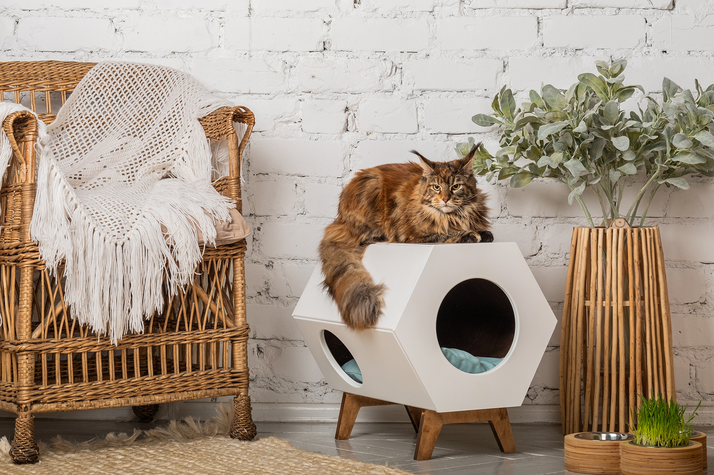
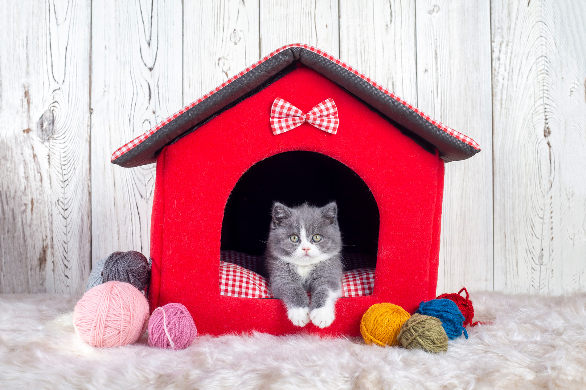
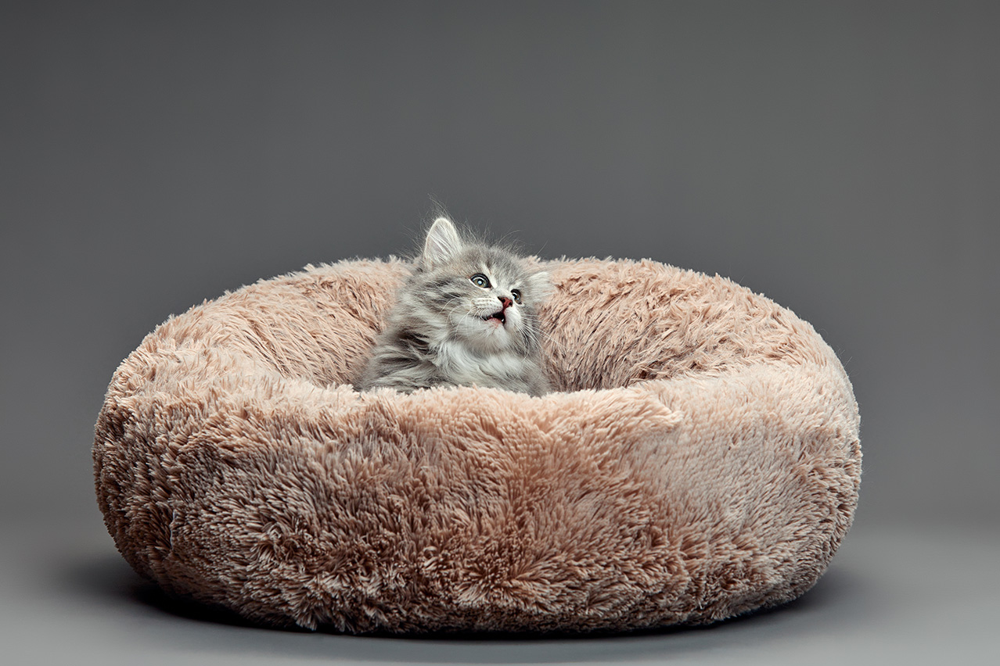
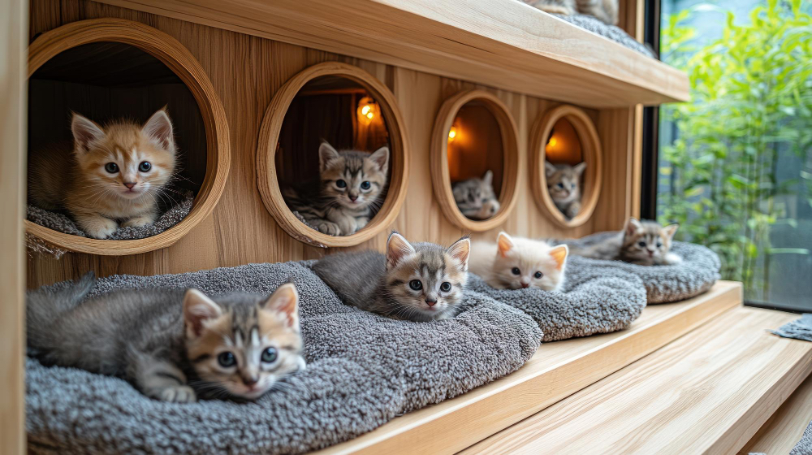

Inspiración Felina
Descubre ideas creativas para hacer feliz a tu gato. Desde espacios de juego hasta momentos de relajación, aquí encontrarás inspiración para crear el ambiente perfecto para tu mascota.

Espacios de Juego Creativos

Zonas de Descanso Perfectas

Decoración Pet-Friendly

Aventuras con tu Gato
Tips de Cuidado
🎯 Estimulación Mental
Los juguetes interactivos mantienen a tu gato mentalmente activo y previenen el aburrimiento.
🛏️ Espacios de Descanso
Crea múltiples espacios cómodos donde tu gato pueda relajarse y sentirse seguro.
🌿 Plantas Seguras
Elige plantas no tóxicas para gatos si quieres decorar con vegetación natural.